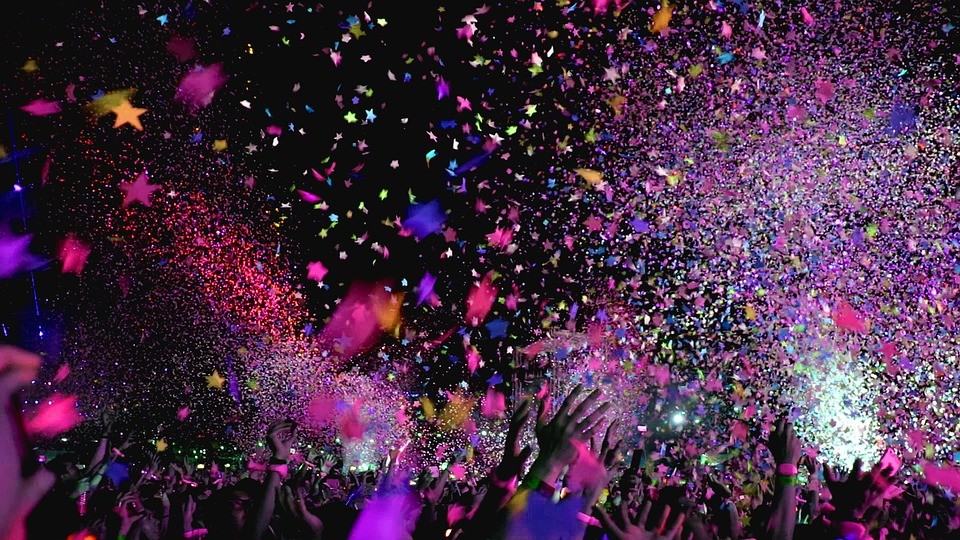

Dove

Il Jova beach party torna sulle spiagge italiane, dalle spiagge di Lignano Sabbiadoro fino a Vasto, Jovanotti condurrà il suo tour musicale.
Questo tour musicale è all’insegna di libertà e spensieratezza.
Il mare, i piedi immersi nella sabbia, la protezione 0 spalmata sopra al cuore il sapore di estate nell’aria.
Quando

- 2 e 3 luglio 2022 Lignano Sabbiadoro (Ud), Spiaggia Bell’Italia
- 8 e 9 luglio 2022 Marina di Ravenna (Ra), Lungomare
- 13 luglio 2022 Aosta (Gressan), Area Verde
- 17 luglio 2022 Albenga (Villanova, Sv), Ippodromo dei Fiori
- 23 e 24 luglio 2022 Marina di Cerveteri (Rm), Lungomare degli Etruschi
- 30 e 31 luglio 2022 Barletta, Lungomare Mennea
- 5 e 6 agosto 2022 Fermo, Lungomare Fermano
- 12 e 13 agosto 2022 Roccella Jonica (Rc), Area Natura Village
- 19 e 20 agosto 2022 Vasto (Ch), Lungomare Duca degli Abruzzi
- 26 e 27 agosto 2022 Castel Volturno (Ce), Spiaggia Lido Fiori Flava Beach
- 2 e 3 settembre 2022 Viareggio (Lu), Spiaggia del Muraglione
- 10 settembre 2022 Bresso-Milano, Aeroporto
Musica
Un'enorme festa sulla spiaggia, dj pazzeschi musica e sonoro stupefacenti. Non c’è nessuna scaletta, evento è unico come chi ne prende parte. è un’occasione irripetibile unica nel suo genere all’insegna della gioia e del divertimento. Jovanotti festeggia così i suoi 30 anni di carriera riperrendo con le canzoni più belle, quelle di un giovanissimo fino alle più recenti. Ma non solo all’evento saranno presenti artisti nazionali e internazionali ad esibirsi insieme al cantante.
I palchi
A Jova Beach Party i palchi saranno 3:
- Lo SBAM STAGE è il sound system dedicato ai DJs e alla club culture, dance hall, house, musica da ballo nelle sue accezioni più spinte
- Il KONTIKI STAGE al centro della spiaggia, sorta di zattera sonora per la musica del mondo, con ospiti che arriveranno da ogni latitudine, dando risalto in particolare alla musica più attuale proveniente dal mediterraneo.
- Il MAIN STAGE è il grande veliero che ospiterà il set serale di Lorenzo con la sua band e i suoi ospiti in quella formula unica che è un mix di musica live e DJ set ogni volta diverso.
Matrimoni
Il giorno più bello della tua vita, che finalmente prende forma, in grande però...davanti a 45 mila ospiti. E il celebrante chi poteva essere se non Lorenzo Cherubini, celebra l'amore in nome del Rock 'en'Roll con una festa che dura dalla mattina fino alla sera, per ballare cantare e divertirsi tutti insieme brindare alla vita e alla felicità degli innamorati tutti insieme.
“Dopo le nozze in comune vi aspetto sulla spiaggia e, con la mia fascia multicolore, vi sposerò con la seconda cerimonia”, “Festeggeremo insieme con tutti gli amici presenti al Jova Beach Party!”.